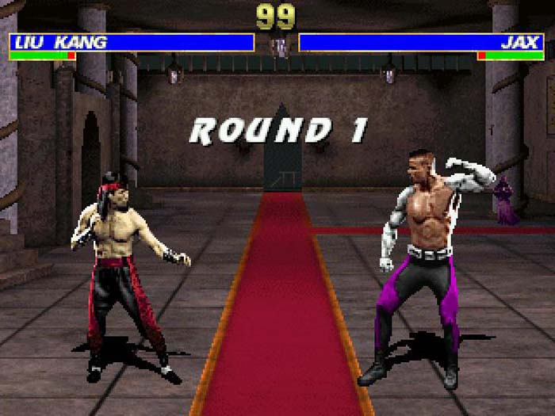
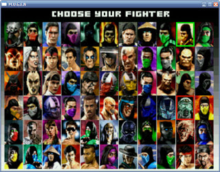
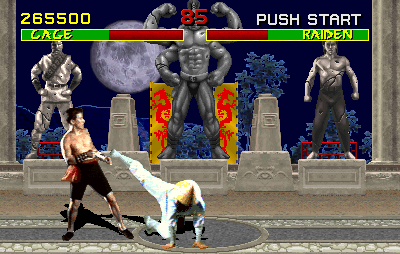

Mortal Kombat
Mortal Kombat se présente comme un sérieux concurrent aux autres jeux de combat, là où Street Fighter règne en maître. Il propose une douzaine de combattants ainsi que d'autres personnages cachés. Ils disposent d'environ 3 coups spéciaux chacun. La difficulté est relativement élevé. Le gros point positif ce sont les animations. En effet les personnages sont motion-capturés ce qui fait qu'ils sont superbement animés et que les mouvements irrationnels ou contre-nature sont limités. Cette version du jeu est très fidèle à l'arcade car le sang et les effets gores sont tous activés, en effet Nintendo a céder à la pression des développeurs.
Lien des articles :
- La mémoire du pad
- Dailymotion


